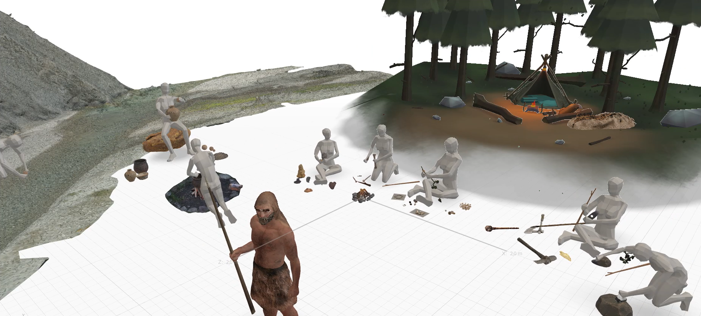
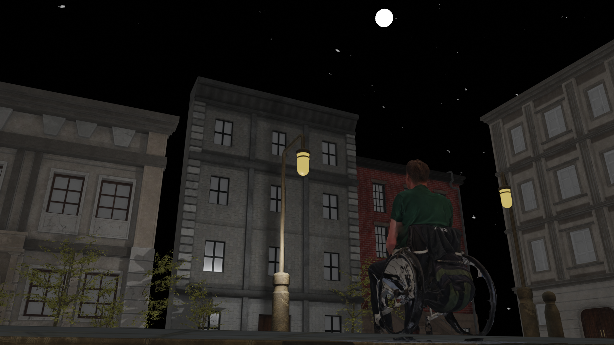

Exploration of the 3D World
This is a small collection of works, some of which are still in progress, that showcase my journey into the realm of 3D software. On this page, featured programs I delved into include Adobe Aero, Blender, Unreal Engine, and Three.js.
Exploring Adobe Aero
For a museum, I designed an AR experience with a prehistoric theme. In this design, you can observe cavemen living their daily lives and performing tasks. The tribe's leader welcomes you and guides you around the village. Using the museum-provided tablet, you can interact with the cavemen by clicking on them, triggering dialogue. Throughout this project, I learned how to rig humanoid creatures in Blender for posing and discovered the suitable objects for import into Adobe Aero. Additionally, I focused on designing the layout of the village.
Capture of the cavemen's living space.
.png)
Capture of cavemen in bushes.
.png)
Capture of cavemen near riverbank.
Exploring Blender
Blender portal
My school provided me with the opportunity to learn Blender as a subject. After a brief crash course that only scratched the surface, I recently revisited Blender. One of my ongoing projects, "The Portal," involves learning UV-unwrapping for scenes and planning to add animations. I gained insights into basic functionality, lighting, and scene building using self-made assets.
Blender Animation
My final project for the Blender course features a sphere in the center (core) with objects orbiting it. I utilized geometry nodes in Blender to make cubes move around the core. This project also involved learning how to move the camera within the scene.
Capture of my Blender Animation.
Beneath this text, you can find some other (unfinished) works. I experimented with basic functionality to get a feel for Blender as a program.
The Doughnut
The GameBoy
The Strange Thing
Exploring Unreal Engine
MUMC Hackathon
In 2023, my school participated in the MUMC Hackathon at Maastricht UMC. Our task was to raise awareness about the challenges non-electrical wheelchair users face at night. I created scenes illustrating this problem, incorporating online assets, lighting adjustments, and scanning my own asset (the wheelchair user) using Polycam 3D. This project taught me positioning, quick asset discovery, scanning usable assets with a phone, adjusting light sources, and effective camera work.
Wheelchair user looking at the sky.
Troubles with a cyclist.
Visible thurds.
The Back Rooms with a Twist
Are liminal spaces familiar to you? Or perhaps you have glitched out of reality yourself and found yourself in a strange place? That's the backrooms for you. Over 10 weeks at school, I focused on Unreal Engine, creating my version of the backrooms (still in progress). This exploration involved delving into liminal spaces and understanding AI in gaming. I built patrolling and hunting AI characters, delving into blueprints, materials, lighting, and basic functionality. Creating patrolling and hunting AI’s for my project was no easy feat. However, it was really rewarding when I managed to figure it out partly. The backrooms have greatly interested me for a long time, as do liminal spaces. I don't really understand why, but I feel pulled towards them in a sense.
Captures of The Backrooms with a Twist.
Exploring Three.js
Where are the finished projects? It's a fair question. While the course hasn't yet yielded a polished portfolio, what you see here is a testament to the skills gained throughout this journey. The absence of a traditional portfolio underscores the raw, unfiltered nature of my learning process – a work in progress in itself.
As you navigate this portfolio website, every line of code, design choice, and interactive element is a result of my Three.js exploration. It's a showcase of evolving skills, incorporating not just final products but the process and learning gathered along the way.
The journey goes beyond mastering a library; it's about discovery, experimentation, and embracing the iterative nature of creation. Challenges are opportunities to learn, iterate, and improve – a philosophy reflected in the structure of this portfolio. Moving forward, as I refine my understanding of Three.js, the goal is not just to fill a portfolio but to cultivate a deep, intuitive grasp of 3D graphics for crafting immersive, innovative experiences. Welcome to my ongoing Three.js journey – stay tuned for exciting projects soon to be showcased here!